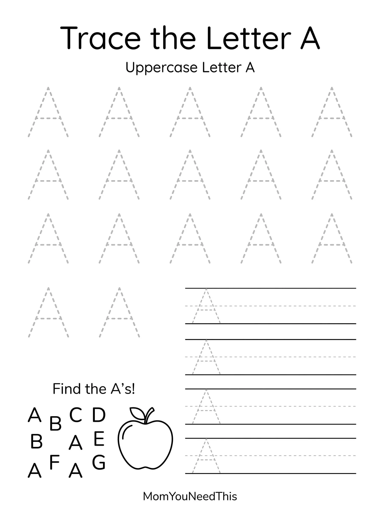

Uppercase Letter A Free Printable Uppercase Letter A Activity For Kids
This free printable uppercase letter A gives toddlers and preschoolers a fun, no-prep way to practice the first letter of the alphabet. Capital A is the display letter — the one that starts names, signs and sentences — built from two slanted lines and a crossbar, like a little pyramid. Print the pages and practice letters through play.
🔤 Learn The Letter A
Use the printable to help your child recognize the uppercase letter A, practice its shape, and build confidence with early letter recognition and writing skills.
Free Uppercase Letter A Printable


How To Use This Printable
- Download and print the letter pages on letter-size paper.
- Say the letter name and sound together before your child starts.
- Trace, color, or match the letters, going slowly and having fun.
- Play I-spy with the letter around the house to lock in the learning.
Why Learn Uppercase Letters?
Capital letters are the ones children meet first in the world: their own name, shop signs, book covers, the start of every sentence. Uppercase A is the very first letter of the alphabet, and its pyramid shape — two slanted lines meeting at a point — is one of the most recognizable forms in print. Learning it builds letter recognition, visual memory, and early handwriting development.
🎁 Keep Exploring Free Learning Activities
Discover more printable activities, toddler resources, and learning ideas created for busy parents.
🎁 View All Free Resources❓ Uppercase Letter A FAQ
Is this uppercase letter a printable really free?
Yes — this uppercase letter A printable is 100% free to download and print at home. No signup and no payment needed. Just tap the download button and print as many copies as you like.
What ages is this printable best for?
It is made for toddlers and preschoolers. Little ones can enjoy it with a grown-up’s help, while older preschoolers can work on it more independently.
How can we practice the letters?
Say each letter's name and sound as your child traces or colors it — A has two sounds to play with: its name in acorn and the short a in apple. Count the capital's three lines as you trace: slant, slant, crossbar. Short, playful sessions a few times a week work best.
🔤 Capital A: The Pyramid Letter
Capital A is architecture: two slanted lines lean together at the top like the frame of a tent, and a crossbar ties them in the middle. It is the only capital built from a triangle, which is why children who learn to spot triangles can find A's anywhere — rooftops, ladders, and the letter that starts their own name, if they are lucky.
Its partner could hardly look more different. Small a is round — a circle with a stem, or in books a body with a roof — sharing no lines at all with the capital's pyramid. A and a are one of the alphabet's most mismatched pairs, which is exactly why each case earns its own practice page.
A opens the alphabet and carries two sounds: the long sound that is its own name (acorn, apron, angel) and the short sound of apple. It is also a word by itself — the “a” in “a cat”, “a hug”, “a story” — so the first letter your child learns is already a word they can read.
🔗 More Free Printables You’ll Love
- 🔤 Free Lowercase Letter AFree printable lowercase letter a for little learners.
- ✏️ Free Letter A Formation PracticeFree printable letter a formation practice for little learners.
- 🔊 Free Letter A Sound MatchFree printable letter a sound match for little learners.
- 🔤 Free Letter A Uppercase Lowercase PracticeFree printable letter a uppercase lowercase practice for little learners.